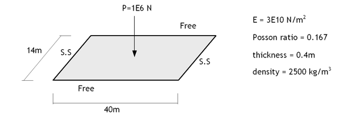
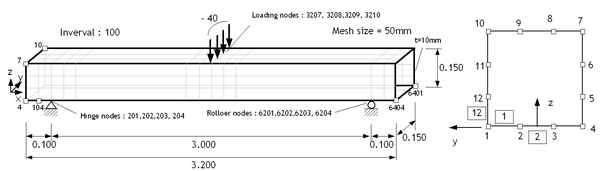
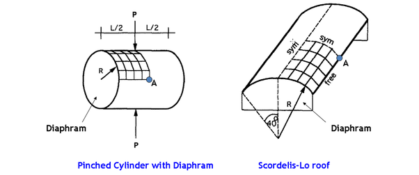

V.4 Shell Element
V.4.1 Simply-supported Plate
As shown in the figure, three analyses were performed for the out-of-plane behavior of a simply supported two-way slab: natural frequency analysis, central point load application, and self-weight application.

Figure V.4.1 Analysis modelTable V.4.1 Vertical Displacement at the Center under Tip Load
| Mesh | ABAQUS S4R5 |
ABAQUS CSS8 |
MIDAS | S4F | S3F | S4 | S3 | CS8 | CS6 |
|---|---|---|---|---|---|---|---|---|---|
| 4×4 | 0.434897 | no data | 0.587892 | 0.54978 | 0.547116 | 0.549775 | 0.547116 | 0.549362 | 0.549979 |
| 10×4 | 0.581961 | no data | 0.588615 | 0.58153 | 0.580148 | 0.581535 | 0.580148 | 0.581438 | 0.581865 |
| 20×8 | 0.587233 | 0.58690 | 0.589004 | 0.58713 | 0.58667 | 0.587128 | 0.58667 | 0.587039 | 0.586964 |
| 40×14 | 0.588578 | no data | 0.58906 | 0.58856 | 0.588417 | 0.588562 | 0.588417 | 0.588477 | 0.588412 |
Table V.4.2 Vertical Displacement at the Center under Self-Weight
| Mesh | ABAQUS S4R5 |
ABAQUS CSS8 |
MIDAS | S4F | S3F | S4 | S3 | CS8 | CS6 |
|---|---|---|---|---|---|---|---|---|---|
| 4×4 | no data | no data | no data | 1.81509 | 1.80663 | 1.81509 | 1.80663 | 1.81425 | 1.81741 |
| 10×4 | no data | no data | no data | 1.98772 | 1.98553 | 1.98772 | 1.98553 | 1.98738 | 1.99124 |
| 20×8 | no data | no data | no data | 2.0138 | 2.01402 | 2.0138 | 2.01402 | 2.01349 | 2.0144 |
| 40×14 | no data | no data | no data | 2.02033 | 2.02048 | 2.02033 | 2.02048 | 2.02002 | 2.02029 |
Table V.4.3 Natural Frequency Analysis Results (First Three Modes)
| Mesh | ABAQUS S4R5 |
ABAQUS CSS8 |
MIDAS | S4F | S3F | S4 | S3 | CS8 | CS6 |
|---|---|---|---|---|---|---|---|---|---|
| 4×4 | 0.55253 1.8496 8.669 |
no data | 0.39331 1.5418 1.5673 |
0.42599 1.72341 2.2208 |
0.427736 2.2304 3.65585 |
0.425715 1.71259 2.21433 |
0.427586 2.22656 3.64248 |
0.425925 1.79505 2.21638 |
0.425821 1.89252 2.21721 |
| 10×4 | 0.39829 1.65191 1.6690 |
no data | 0.39340 1.5661 1.5779 |
0.398336 1.65959 1.6723 |
0.398756 1.66219 1.79318 |
0.398089 1.65538 1.66134 |
0.398624 1.65991 1.78679 |
0.398275 1.65811 1.72605 |
0.397869 1.64806 1.7505 |
| 20×8 | 0.39402 1.5977 1.6622 |
0.39373 1.5830 1.6879 |
0.39343 1.5782 1.6376 |
0.394631 1.59778 1.661 |
0.394623 1.5974 1.67347 |
0.394387 1.59382 1.65006 |
0.394493 1.59527 1.66754 |
0.394569 1.59647 1.713 |
0.394476 1.59493 1.71876 |
| 40×14 | 0.39371 1.5829 1.6581 |
no data | 0.39343 1.5783 1.6376 |
0.393706 1.58284 1.65478 |
0.393693 1.58262 1.65885 |
0.393463 1.57893 1.64387 |
0.393563 1.58053 1.65299 |
0.393645 1.58157 1.7072 |
0.393618 1.58117 1.70968 |
S4R5 : Abaqus conventional shell element S4R5
CSS8 : Abaqus continuum shell element CSS8 Table V.4.4 Comparison of Left-Side Vertical Reactions for 40×14 Mesh
| Position(Left Side) | Node | ABAQUS S4R5 | MIDAS | S4F |
|---|---|---|---|---|
| Corner | Corner Node | 70976.4 | 71764.25 | 69844.7 |
| 1/7 | 28413.5 | 27818.94 | 29757.4 | |
| 2/7 | 26878.4 | 26456.54 | 26683.8 | |
| 3/7 | 26937.4 | 27166.59 | 26880.7 | |
| 4/7 | 27597 | 27406.56 | 27560.8 | |
| 5/7 | 27404.5 | 27659.77 | 27556.8 | |
| 6/7 | 28004.3 | 27801.33 | 27818.1 | |
| Center | Center Node | 27576.9 | 27852.04 | 27795.4 |
- Compared with ABAQUS, S4F agrees well.
NSLayer Verification
The *-SSPlate40x14-NSLayerVV.inp cases are derived from the corresponding *-SSPlate40x14-Layered.inp models by adding one non-structural layer with thickness 0.1 and the same density as the structural material. The non-structural layer is expected to contribute to mass and gravity load only. Therefore, the center displacement under the point load must remain unchanged, the first natural frequency must decrease because of the added mass, and the self-weight response with Scope=All must match the sum of Scope=Structural and Scope=NonStructural within printed-result precision.
Table V.4.4a NSLayer Verification Results for 40x14 Layered Shell Models
| Element | CPoint center \(D_Z\) | Layered \(f_1\) | NSLayer \(f_1\) | Ratio | SelfAll center \(D_Z\) | Structural + NonStructural center \(D_Z\) |
|---|---|---|---|---|---|---|
| S3F | -0.588417 | 0.393693 | 0.352118 | 0.894397 | -2.525600 | -2.525600 |
| S3 | -0.588417 | 0.393563 | 0.351916 | 0.894180 | -2.525600 | -2.525600 |
| S4F | -0.588562 | 0.393706 | 0.352131 | 0.894401 | -2.525410 | -2.525412 |
| S4 | -0.588562 | 0.393463 | 0.351750 | 0.893985 | -2.525410 | -2.525412 |
| CS6 | -0.588412 | 0.393618 | 0.352056 | 0.894410 | -2.525360 | -2.525363 |
| CS8 | -0.588477 | 0.393645 | 0.352081 | 0.894412 | -2.525030 | -2.525025 |
Input File
The -Layered 40x14 variants split the same homogeneous section into two identical material layers to verify layered shell equivalence. The -CompositePlate variants split the same material and total thickness into ten zero-degree plies for S3F/S4F to verify CompositePlate equivalence.
-
S3F-SSPlate4x4.inp : 4x4x2 elements, S3F
-
S3F-SSPlate10x4.inp : 10x4x2 elements, S3F
-
S3F-SSPlate20x8.inp : 20x8x2 elements, S3F
-
S3F-SSPlate40x14.inp : 40x14x2 elements, S3F
-
S3F-SSPlate40x14-Layered.inp : 40x14x2 elements, S3F, two-layer Shell section
-
S3F-SSPlate40x14-NSLayerVV.inp : 40x14x2 elements, S3F, Shell section with NSLayer; verifies unchanged point-load stiffness, reduced frequency, and gravity Scope superposition
-
S3F-SSPlate40x14-CompositePlate.inp : 40x14x2 elements, S3F, ten-ply CompositePlate section
-
S3-SSPlate4x4.inp : 4x4x2 elements, S3
-
S3-SSPlate10x4.inp : 10x4x2 elements, S3
-
S3-SSPlate20x8.inp : 20x8x2 elements, S3
-
S3-SSPlate40x14.inp : 40x14x2 elements, S3
-
S3-SSPlate40x14-Layered.inp : 40x14x2 elements, S3, two-layer Shell section
-
S3-SSPlate40x14-NSLayerVV.inp : 40x14x2 elements, S3, Shell section with NSLayer; verifies unchanged point-load stiffness, reduced frequency, and gravity Scope superposition
-
S4F-SSPlate4x4.inp : 4x4 elements, S4F
-
S4F-SSPlate10x4.inp : 10x4 elements, S4F
-
S4F-SSPlate20x8.inp : 20x8 elements, S4F
-
S4F-SSPlate40x14.inp : 40x14 elements, S4F
-
S4F-SSPlate40x14-Layered.inp : 40x14 elements, S4F, two-layer Shell section
-
S4F-SSPlate40x14-NSLayerVV.inp : 40x14 elements, S4F, Shell section with NSLayer; verifies unchanged point-load stiffness, reduced frequency, and gravity Scope superposition
-
S4F-SSPlate40x14-CompositePlate.inp : 40x14 elements, S4F, ten-ply CompositePlate section
-
S4-SSPlate4x4.inp : 4x4 elements, S4
-
S4-SSPlate10x4.inp : 10x4 elements, S4
-
S4-SSPlate20x8.inp : 20x8 elements, S4
-
S4-SSPlate40x14.inp : 40x14 elements, S4
-
S4-SSPlate40x14-Layered.inp : 40x14 elements, S4, two-layer Shell section
-
S4-SSPlate40x14-NSLayerVV.inp : 40x14 elements, S4, Shell section with NSLayer; verifies unchanged point-load stiffness, reduced frequency, and gravity Scope superposition
-
CS6-SSPlate4x4.inp : 4x4x2 elements, CS6
-
CS6-SSPlate10x4.inp : 10x4x2 elements, CS6
-
CS6-SSPlate20x8.inp : 20x8x2 elements, CS6
-
CS6-SSPlate40x14.inp : 40x14x2 elements, CS6
-
CS6-SSPlate40x14-Layered.inp : 40x14x2 elements, CS6, two-layer Shell section
-
CS6-SSPlate40x14-NSLayerVV.inp : 40x14x2 elements, CS6, Shell section with NSLayer; verifies unchanged point-load stiffness, reduced frequency, and gravity Scope superposition
-
CS8-SSPlate4x4.inp : 4x4 elements, CS8
-
CS8-SSPlate10x4.inp : 10x4 elements, CS8
-
CS8-SSPlate20x8.inp : 20x8 elements, CS8
-
CS8-SSPlate40x14.inp : 40x14 elements, CS8
-
CS8-SSPlate40x14-Layered.inp : 40x14 elements, CS8, two-layer Shell section
-
CS8-SSPlate40x14-NSLayerVV.inp : 40x14 elements, CS8, Shell section with NSLayer; verifies unchanged point-load stiffness, reduced frequency, and gravity Scope superposition
V.4.2 Effect of 5-Dof Shell
As shown in the figure, static and natural frequency analyses were performed for a hollow square tube, and the results were compared.

Figure V.4.2 Simply Supported Beam with Hollow Box SectionTable V.4.5 Vertical Displacements at Loading Points
| Node | Abaqus S4 | Abaqus S4R | Abaqus S4R5 | Hyfeast S4F |
|---|---|---|---|---|
| 3207 | -3.4185E-05 | -3.5181E-05 | -3.52E-05 | -3.3793E-05 |
| 3208 | -3.5276E-05 | -3.6310E-05 | -3.63E-05 | -3.4880E-05 |
| 3209 | -3.5276E-05 | -3.6310E-05 | -3.63E-05 | -3.4880E-05 |
| 3210 | -3.4185E-05 | -3.5181E-05 | -3.52E-05 | -3.3793E-05 |
Table V.4.6 Vertical Support Reactions
| Node | Abaqus S4 | Abaqus S4R | Abaqus S4R5 | Hyfeast S4F |
|---|---|---|---|---|
| 207 | 9.854 | 9.853 | 9.538 | 9.74323 |
| 202 | 0.1465 | 0.1473 | 0.4618 | 0.256772 |
| 203 | 0.1465 | 0.1473 | 0.4618 | 0.256772 |
| 204 | 9.854 | 9.853 | 9.538 | 9.74323 |
| 6201 | 9.853 | 9.854 | 9.539 | 9.74296 |
| 6202 | 0.1469 | 0.1473 | 0.461 | 0.257036 |
| 6203 | 0.1469 | 0.1473 | 0.461 | 0.257036 |
| 6204 | 9.853 | 9.854 | 9.539 | 9.74296 |
Table V.4.7 Natural Frequencies (Hz)
| Mode | Abaqus S4 | Abaqus S4R | Abaqus S4R5 | Hyfeast S4F |
|---|---|---|---|---|
| 1 | 40.615 | 40.04 | 40.024 | 40.8517 |
| 2 | 54.389 | 52.73 | 51.594 | 54.0611 |
| 3 | 152.67 | 149.38 | 149.08 | 153.508 |
| 4 | 155.49 | 150.54 | 150.42 | 156.798 |
□ Remark
ABAQUS S4R5 : Reduced integration, small deformation, 5 DOFs
ABAQUS S4R : Reduced integration, finite deformation, 6 DOFs
ABAQUS S4 : Full integration, finite deformation, 6 DOFs
Hyfeast S4F : Full integration, resultant-based, small deformation, 5 DFs
Input File
- HollowBox.inp
V.4.3 Socodles-Lo Roof and Pinched Cylinder
Analyses were performed for two structures commonly used for the verification of shell elements.

Figure V.4.3 Analysis ModelsTable V.4.8 Effect of Bending Angle and Mesh on Pinched Cylinder with Diaphragm
| Mesh | Fold angle (degree) |
S4F displ. |
S4F normalized |
S4F RCN |
Belytschko & Leviathan (1994) 4-Node SRI |
Belytschko & Leviathan (1994) YASE |
Belytschko & Leviathan (1994) MITC4 |
Belytschko & Leviathan (1994) QPH |
|---|---|---|---|---|---|---|---|---|
| 4x4 | 22.5 | 6.77393E-06 | 0.37 | 3.05E-05 | 0.37 | 0.39 | 0.37 | 0.37 |
| 8x8 | 11.3 | 1.35662E-05 | 0.74 | 5.01E-05 | 0.75 | 0.76 | 0.74 | 0.74 |
| 16x16 | 5.6 | 1.69565E-05 | 0.93 | 8.47E-05 | 0.94 | 0.94 | 0.93 | 0.93 |
| 32x32 | 2.8 | 1.80480E-05 | 0.99 | 2.17E-04 | ||||
| 64x64 | 1.4 | 1.83797E-05 | 1.01 | 6.12E-05 | ||||
| 90x90 | 1 | 1.84449E-05 | 1.01 | 3.14E-05 | ||||
| Reference | 1.82480E-05 |
RCN : estimated reciprocal condition number Table V.4.9 Displacements of Static Analysis by Integration Scheme (Pinched Cylinder with Diaphragm)
| Mesh | S4F | CS8-Lobatto3 CS8-NewtonCotes3 |
CS8-Legendre2 |
|---|---|---|---|
| 4x4 | 6.77393E-06 | 6.90657e-06 | 6.90664e-06 |
| 8x8 | 1.35662E-05 | 1.3621e-05 | 1.36212e-05 |
| 16x16 | 1.69565E-05 | 1.69384e-05 | 1.69386e-05 |
| 32x32 | 1.80480E-05 | 1.80113e-05 | 1.80115e-05 |
| 64x64 | 1.83797E-05 | 1.83426e-05 | 1.83429e-05 |
| 90x90 | 1.84449E-05 | 1.84222e-05 | 1.84225e-05 |
| Reference | 1.82480E-05 |
Table V.4.10 Natural Frequencies by Integration Scheme (Pinched Cylinder with Diaphragm)
| Mesh | S4F | CS8-Lobatto3 CS8-NewtonCotes3 |
CS8-Legendre2 |
|---|---|---|---|
| 4x4 | 0.00323292 0.00513145 0.00665306 |
0.00323619 0.00508483 0.00668221 |
0.00323618 0.00508476 0.00668221 |
| 8x8 | 0.0027018 0.00275987 0.00505412 |
0.00270301 0.00275511 0.00504251 |
0.002703 0.00275508 0.00504244 |
| 16x16 | 0.0024456 0.00258707 0.00394978 |
0.00244567 0.00258786 0.00394906 |
0.00244564 0.00258785 0.003949 |
| 32x32 | 0.00237723 0.00256078 0.00373466 |
0.0023772, 0.00256006 0.00373557 |
0.00237718 0.00256006 0.00373552 |
| 64x64 | 0.00236056 0.00255408 0.00368379 |
0.00236058 0.00255318 0.00368516 |
0.00236056 0.00255317 0.00368511 |
| 90x90 | 0.00235812 0.00255309 0.00367584 |
0.00235786 0.00255204 0.00367696 |
0.00235784 0.00255204 0.00367691 |
Table V.4.12 Effect of Bending Angle and Mesh on Scordelis-Lo Roof
| Mesh | Fold angle (degree) |
This study displ. |
This study normalized |
This study RCN |
Bel 4-Node SRI |
Bel YASE |
Bel MITC4 |
Bel QPH |
|---|---|---|---|---|---|---|---|---|
| 4x4 | 10.0 | 0.284853 | 0.94 | 1.18E-03 | 0.96 | 1.05 | 0.94 | 0.94 |
| 8x8 | 5.0 | 0.295151 | 0.98 | 7.63E-05 | 0.98 | 1.01 | 0.97 | 0.97 |
| 16x16 | 2.5 | 0.302026 | 1.00 | 1.78E-05 | 1 | 1.02 | 1 | 1.01 |
| 32x32 | 1.3 | 0.305253 | 1.01 | 1.41E-06 | ||||
| 64x64 | 0.6 | 0.305846 | 1.01 | 1.41E-07 | ||||
| 90x90 | 0.4 | 0.305507 | 1.01 | 5.07E-08 | ||||
| Reference | 0.3024 |
Table V.4.13 Displacements of Static Analysis by Integration Scheme (Scordelis-Lo Roof)
| Mesh | S4F | CS8-Lobatto3 CS8-NewtonCotes3 |
CS8-Legendre2 |
|---|---|---|---|
| 4x4 | 0.284853 | 0.282778 | 0.28278 |
| 8x8 | 0.295151 | 0.291716 | 0.291718 |
| 16x16 | 0.302026 | 0.296533 | 0.296535 |
| 32x32 | 0.305253 | 0.29805 | 0.298052 |
| 64x64 | 0.305846 | 0.298599 | 0.298601 |
| 90x90 | 0.305507 | 0.298744 | 0.298746 |
| Reference | 0.3024 |
Table V.4.14 Natural Frequencies by Integration Scheme (Scordelis-Lo Roof) (Hz)
| Mesh | S4F | CS8-Lobatto3 CS8-NewtonCotes3 |
CS8-Legendre2 |
|---|---|---|---|
| 4x4 | 3.13863 12.2226 13.3496 |
3.13666 12.2269 13.3393 |
3.13665 12.2269 13.3393 |
| 8x8 | 3.02455 11.6312 12.3592 |
3.03 11.6308 12.3838 |
3.02999 11.6308 12.3838 |
| 16x16 | 2.97706 11.4768 11.8256 |
2.99123 11.4728 11.8838 |
2.99122 11.4728 11.8838 |
| 32x32 | 2.95841 11.435, 11.6513 |
2.98017 11.4316 11.7371 |
2.98016 11.4316 11.7371 |
| 64x64 | 2.95508 11.425, 11.612, |
2.97663 11.4208 11.6949 |
2.97662 11.4208 11.6948 |
| 90x90 | 2.95684 11.4242 11.6151 |
2.97579 11.4188 11.6864 |
2.97578 11.4188 11.6863 |
Input File
-
S4F-Pinched4.inp : Pinched Cylinder with Diaphragm with 4x4 element, S4F
-
S4F-Pinched8.inp : Pinched Cylinder with Diaphragm with 8x8 element, S4F
-
S4F-Pinched16.inp : Pinched Cylinder with Diaphragm with 16x16 element, S4F
-
S4F-Pinched32.inp : Pinched Cylinder with Diaphragm with 32x32 element, S4F
-
S4F-Pinched64.inp : Pinched Cylinder with Diaphragm with 64x64 element, S4F
-
S4F-Pinched90.inp : Pinched Cylinder with Diaphragm with 90x90 element, S4F
-
S4F-Scordelis4.inp : Scordelis-Lo Roof with Diaphragm with 4x4 element, S4F
-
S4F-Scordelis8.inp : Scordelis-Lo Roof with Diaphragm with 8x8 element, S4F
-
S4F-Scordelis16.inp : Scordelis-Lo Roof with Diaphragm with 16x16 element, S4F
-
S4F-Scordelis32.inp : Scordelis-Lo Roof with Diaphragm with 32x32 element, S4F
-
S4F-Scordelis64.inp : Scordelis-Lo Roof with Diaphragm with 64x64 element, S4F
-
S4F-Scordelis90.inp : Scordelis-Lo Roof with Diaphragm with 90x90 element, S4F
References
- Belytschko, T., & Leviathan, I. (1994). Physical stabilization of the 4-node shell element with one point quadrature. Computer Methods in Applied Mechanics and Engineering, 113(3-4), 321-350.